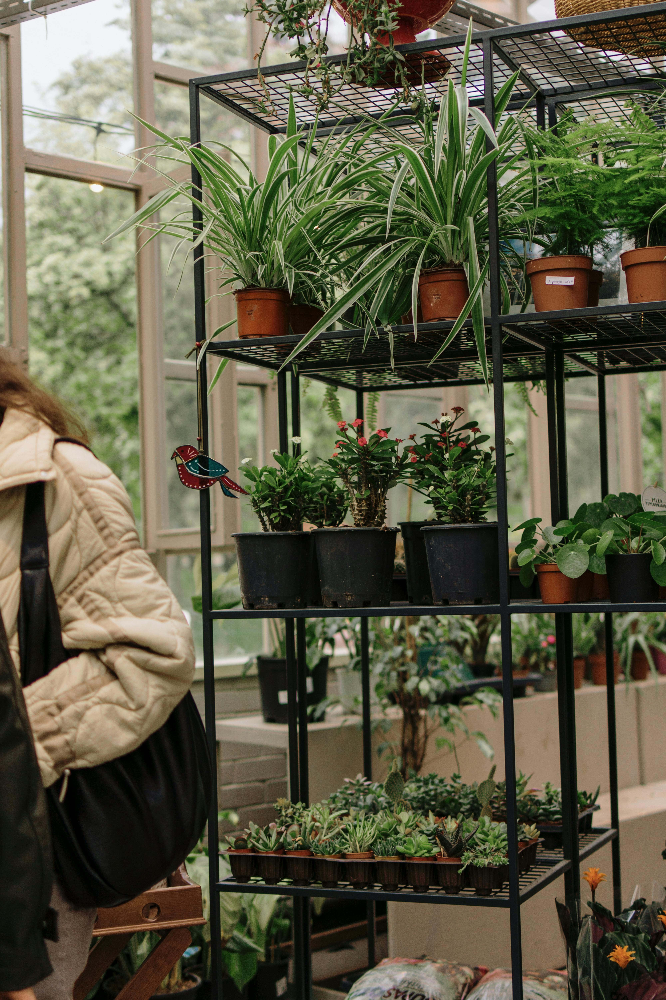

<section class="px-2 py-1 mb-12 bg-white md:px-0">
  <div class="container items-center max-w-6xl px-8 mx-auto">
    <div class="flex flex-wrap items-center sm:-mx-8">
      <div class="w-full md:w-1/2 md:pr-8">
        <div class="w-full pb-6 space-y-4 sm:max-w-md lg:max-w-lg md:space-y-2 lg:space-y-4 xl:space-y-9 sm:pr-5 lg:pr-0 md:pb-0">
          <h1 class="text-4xl font-extrabold tracking-tight text-gray-900 sm:text-5xl md:text-4xl lg:text-5xl xl:text-6xl">
            <span class="block xl:inline">Por que você deveria ter uma </span>
            <span class="block text-indigo-600 xl:inline" style="color: #2D9263;">Planta?</span>
          </h1>
          <p class="mx-auto text-base text-gray-500 sm:max-w-md lg:text-xl md:max-w-3xl">Ter plantas por perto pode desencadear a liberação de substâncias químicas calmantes no corpo, ajudando a reduzir os níveis de estresse e ansiedade. Simplesmente ver vegetação ou cuidar de uma planta viva pode reduzir o cortisol, aliviar a tensão e criar uma sutil sensação de conforto e conexão com a natureza.</p>

          <div class="relative flex flex-col sm:flex-row sm:space-x-4">
            <a [routerLink]="['/list-of-plants']" class="flex items-center w-full px-6 py-3 mb-3 text-lg text-white bg-indigo-600 rounded-md sm:mb-0 hover:bg-indigo-700 sm:w-auto" style="background-color: #2D9263;" data-rounded="rounded-md">
              Lista de plantas

              <svg class="w-5 h-5 ml-1" viewBox="0 0 24 24" fill="none" stroke="currentColor" stroke-width="2" stroke-linecap="round" stroke-linejoin="round"><line x1="5" y1="12" x2="19" y2="12"></line><polyline points="12 5 19 12 12 19"></polyline></svg>
            </a>
          </div>
        </div>
      </div>
      <div class="w-full md:w-1/2">
        <div class="w-full h-auto overflow-hidden rounded-md shadow-xl sm:rounded-xl" data-rounded="rounded-xl" data-rounded-max="rounded-full">
            
          </div>
      </div>
    </div>
  </div>
</section>
